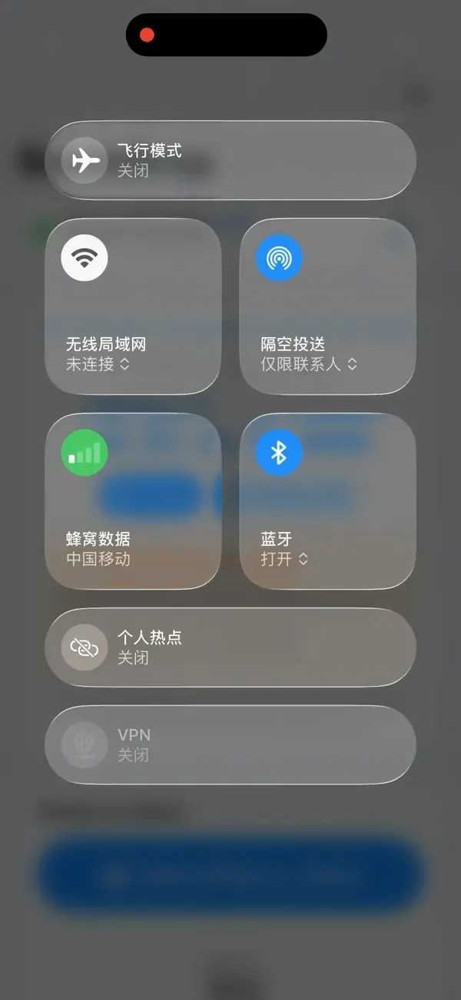
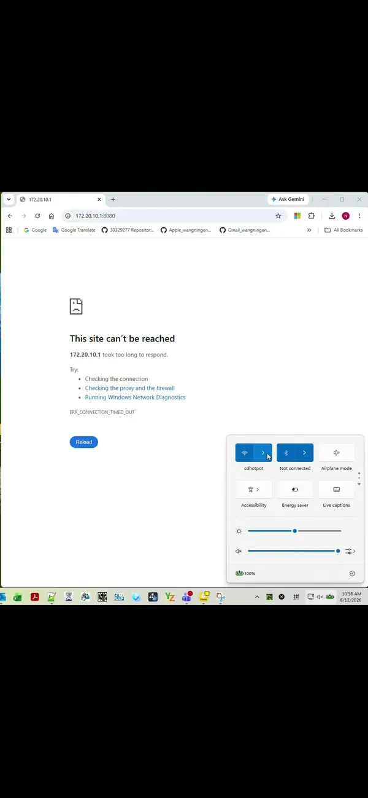

Transférez photos et vidéos de votre iPhone vers n'importe quel ordinateur — instantanément.
BeamDrop transforme votre iPhone ou iPad en petit serveur web local. Choisissez vos photos et vidéos, ouvrez l'adresse affichée dans n'importe quel navigateur sur votre PC ou Mac, et téléchargez-les en pleine résolution — via le Wi-Fi local ou le partage de connexion. Pas de câble USB, pas d'envoi dans le cloud, pas de connexion.
Découvrez la démo en 90 secondes
De l'autorisation d'accès sur iPhone au téléchargement sur un PC Windows — le parcours complet, du début à la fin.
Comment ça marche
Deux appareils, quelques gestes. Votre iPhone partage, votre ordinateur télécharge.
Sur votre iPhone



http://172.20.10.1:8080.
Sur votre ordinateur


Pourquoi choisir BeamDrop
Un outil ciblé qui fait une seule chose, et bien : sortir vos médias du téléphone, vite et en privé.
🔌 Sans câble
Oubliez câbles USB, adaptateurs et iTunes. Tout passe par votre Wi-Fi local ou le partage de connexion.
☁️ Sans cloud
Les fichiers vont directement de votre iPhone à votre ordinateur. Rien n'est jamais envoyé à un serveur tiers.
🔒 Sans compte
Pas d'inscription, pas de connexion, pas de suivi. Ouvrez l'app et partagez en quelques secondes.
🖼️ Pleine résolution
Photos et vidéos sont transférées comme fichiers d'origine — sans recompression ni perte de qualité.
⚡ Ultra rapide
La vitesse du réseau local permet de télécharger grosses vidéos et lots volumineux en un instant, pas en quelques minutes.
💻 Partout
Tout appareil doté d'un navigateur peut recevoir les fichiers — Windows, Mac, Linux, tablettes, voire un autre téléphone.
👁️ Aperçu avant tout
Voyez les vignettes dans le navigateur, choisissez précisément ce que vous voulez, ou touchez Download All pour tout récupérer.
🛫 Idéal en voyage
Le mode partage de connexion permet de transférer n'importe où — sans réseau Wi-Fi partagé.
Privé par conception
BeamDrop ne collecte aucune donnée et n'envoie jamais vos photos ou vidéos dans le cloud. L'app exécute un serveur web léger directement sur votre iPhone, et les fichiers circulent uniquement sur votre réseau local vers l'ordinateur de votre choix. Aucun compte, aucune analyse, aucune publicité. Quand vous fermez l'app, le serveur s'arrête. Consultez notre Politique de confidentialité pour en savoir plus.
Questions fréquentes
Faut-il un câble pour transférer des photos de l'iPhone vers le PC ?
Non. BeamDrop fonctionne via un réseau Wi-Fi local ou le partage de connexion de votre iPhone. Aucun câble USB, aucun iTunes, aucun envoi dans le cloud.
BeamDrop envoie-t-il mes photos dans le cloud ?
Non. Les fichiers passent directement de votre iPhone à votre ordinateur sur le réseau local. Rien n'est envoyé à un serveur et aucun compte n'est nécessaire.
Quels ordinateurs et navigateurs sont compatibles ?
Tout appareil doté d'un navigateur récent — Windows, macOS, Linux, ou un autre téléphone ou une tablette. Ouvrez simplement l'adresse affichée par BeamDrop.
Quelle adresse saisir sur mon ordinateur ?
BeamDrop affiche une URL locale dans l'app, par exemple http://172.20.10.1:8080. Saisissez cette adresse exacte dans votre navigateur. Touchez Actualiser dans l'app si elle n'apparaît pas encore.
Les photos et vidéos sont-elles transférées en pleine résolution ?
Oui. BeamDrop envoie les fichiers d'origine en qualité maximale, sans recompression.
Pourquoi la connexion ne fonctionne-t-elle pas ?
Vérifiez que votre iPhone et votre ordinateur sont sur le même réseau Wi-Fi, ou que l'ordinateur est connecté au partage de connexion de l'iPhone. Laissez BeamDrop ouvert et votre iPhone éveillé pendant le transfert.
Quelle version d'iOS est requise ?
iOS 17.0 ou ultérieur, sur iPhone et iPad.
Comment contacter le support ?
Écrivez à wangning.engineer@outlook.com. Délai de réponse habituel : 24 à 48 heures.
Télécharger l'app
BeamDrop est disponible sur l'App Store pour iPhone et iPad.